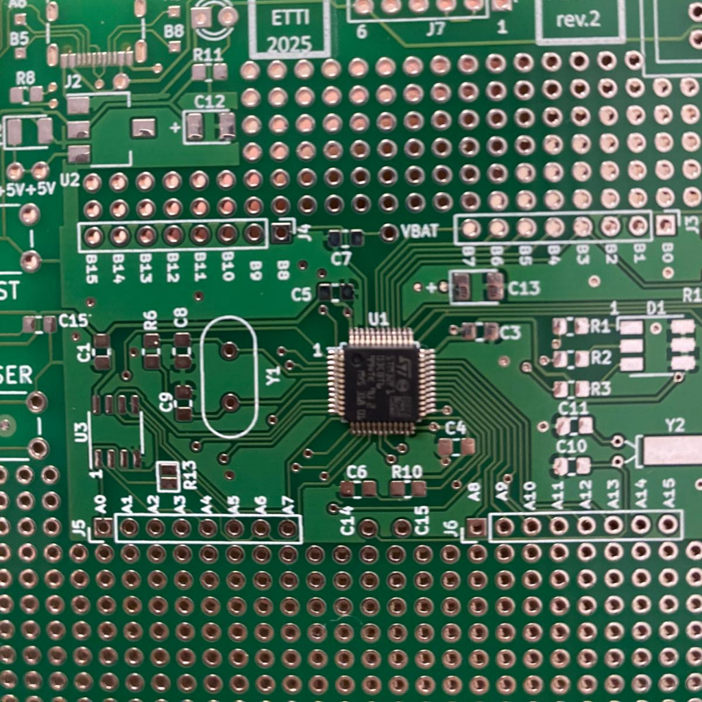
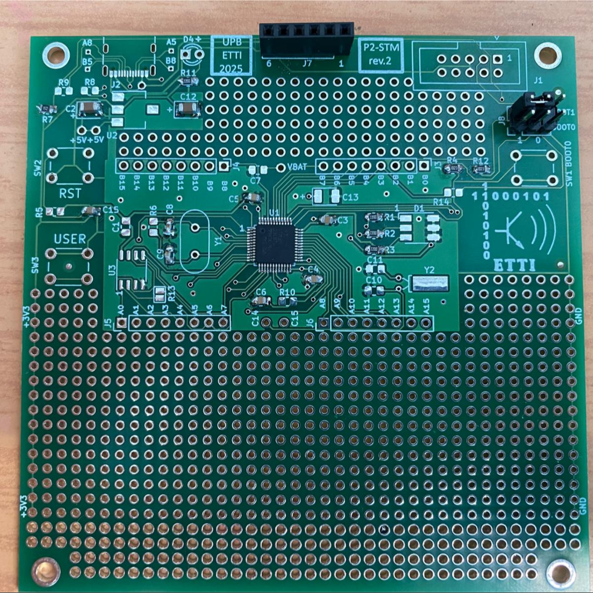
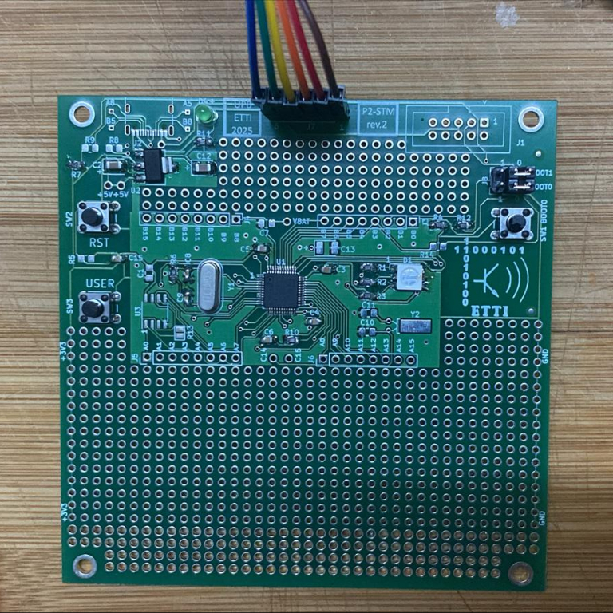

Fig 1. Captură de ecran cu schema electrică
Realizat de: DRAGOTONIU Ionuț-Constantin 431C
BENGULESCU Vlad-Alexandru 431C
Proiectul constă într-un ceas afișat pe un inel cu 24 de LED-uri adresabile individual (WS2812B), plus un LED THT central care va funcționa drept secundar(va clipi pentru fiecare secundă care trece). Sistemul este controlat de un microcontroller STM32F103 (rulând la 72MHz), iar ora și minutul vor fi transmise prin terminalul de la Visual Studio (placa va trebui să fie conectată prin USB to TTL la laptop)
Fig 1. Captură de ecran cu schema electrică
| Nr. Crt. | Componentă | Capsulă | Cantitate | Furnizor | Preț (RON) |
|---|---|---|---|---|---|
| 1 | Microcontroller STM32F103C8T6 | DIP-40 (Modul) | 1 | UPB | - |
| 2 | LED RGB | SMD | 1 | UPB | - |
| 3 | LED | THT | 1 | UPB | - |
| 4 | Cristal 8MHz | THT | 1 | UPB | - |
| 5 | Fire Colorate Mamă-Tată (10p) 20 cm | THT | 1 | Optimus Digital | 3.99 RON |
| 6 | Conectori pin tată 3x2 | THT | 1 | UPB | - |
| 7 | Conectori pin mamă 6x1 | THT | 1 | UPB | - |
| 8 | Inel 24 LED-uri WS2812B | Modul PCB Circular | 1 | Optimus Digital | 23.18 RON |
| 9 | Buton 6x6x6 | THT | 4 | Optimus Digital | 1.44 RON |
| 10 | Condensator 18pf | SMD | 2 | UPB | - |
| 11 | Condensator 10uF | SMD | 2 | UPB | - |
| 12 | Condensator 100nF | SMD | 5 | UPB | - |
| 13 | Condensator 1000uF/35V | THT | 1 | Optimus Digital | 1.99 RON |
| 14 | Rezistență 220Ω | SMD | 4 | UPB | - |
| 15 | Rezistență 82kΩ | SMD | 2 | UPB | - |
| 16 | Rezistență 1.5kΩ | SMD | 1 | UPB | - |
| 17 | Rezistență 1MΩ | SMD | 1 | UPB | - |
| 18 | Rezistență 10Ω | SMD | 1 | UPB | - |
| 19 | Convertor USB to TTL CH340G | - | 1 | Optimus Digital | 9.99 RON |

Fig 1. Stadiul 0: Am primit plăcuța și am lipit microcontrolerul (7 aprilie)

Fig 2. Stadiul 1: Machetă cu componente parțial lipite (21 aprilie)

Fig 3. Stadiul 2: Toate piesele lipite, fără piesele unice pentru proiectul echipei noastre (W5). (12 mai)